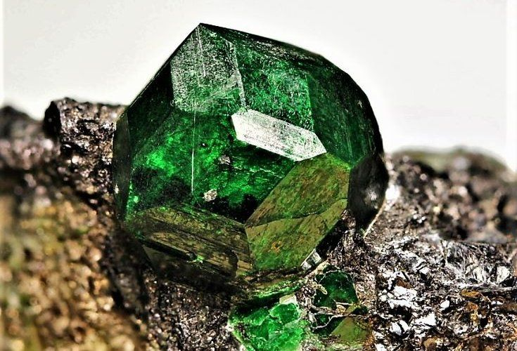
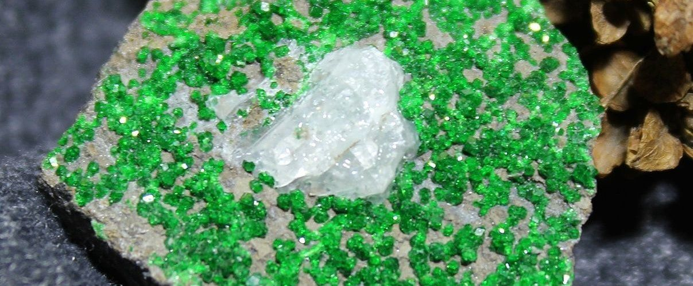
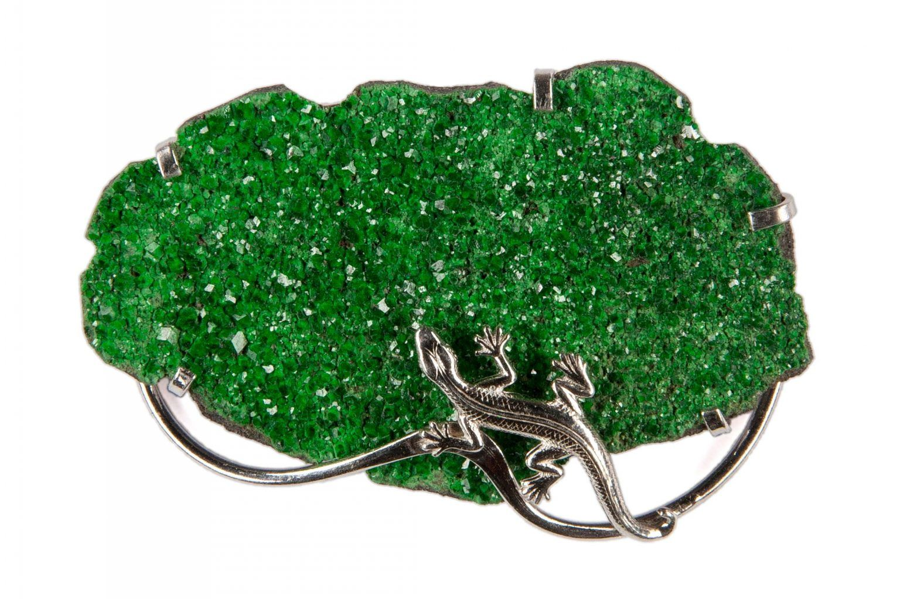
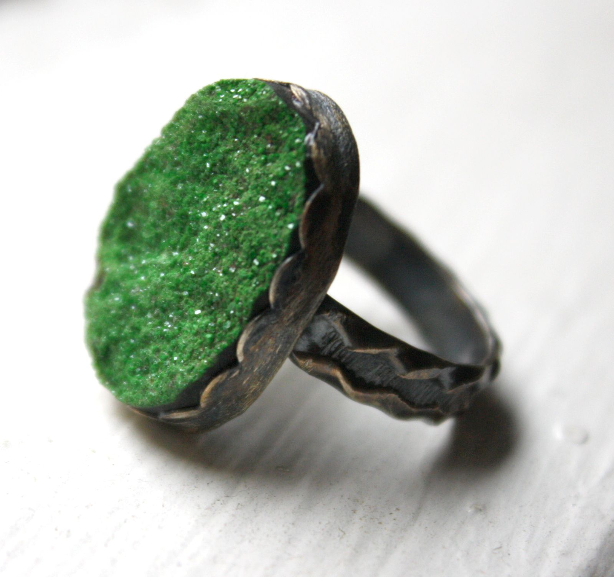
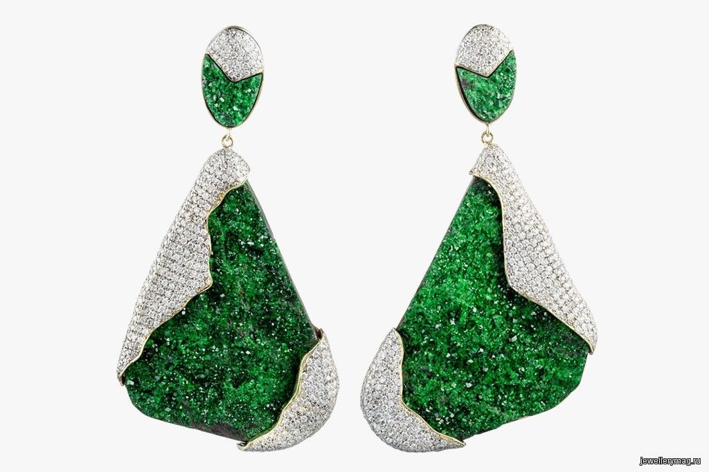

Уваровит
У уваровита есть несколько основных название - «императорский камень» и «уральский изумруд». Его магические свойства и применение с области ювелирного искусства

ИСТОРИЯ
Уваровит — назван в честь графа С.С. Уварова, президента Императорской Российской Академии наук, крестника императрицы Екатерины II. Это благородное «дворянское» имя даровал уральскому самоцвету Генрих Гесс после открытия месторождения на Сарановской горе в Бисертской и Пашийской дачах в 1831 году. Впервые красивый изумрудно-зеленый камень был найден крепостным рудознатчем графа Шувалова, за что и получил одно из своих названий — «уральский изумруд». Г.И. Гесс, будучи сам академиком Российской Академии наук, выдающимся геохимиком своего времени, преподавателем Горной академии, участником многих экспедиций на Урал, определил состав нового минерала и идентифицировал его как «хромистый гранат».
НАЗВАНИЯ МИНЕРАЛА
У уваровита есть несколько основных, достаточно хорошо известных названий, так, например, он известен как «императорский камень». Второе известное его название «уральский изумруд» относится так же и к «гранату – демантоиду» и говорит само за себя. Произошло оно по названию первых обнаруженных залежей минерала, очень похожего на изумруд, в районе Уральских гор Траутвинит. Это название встречается и в зарубежной литературе, «ханлеит» — уваровит, добытый в Индии на территории месторождения Ханли.

МЕСТОРОЖДЕНИЯ
Яркий цвет уваровита, без сомнения, связан с присутствием хрома. Минерал прозрачный и полупрозрачный имеет стеклянный блеск. Крупные кристаллы редки, обычно образует мелкозернистые щётки и агрегаты с размером кристаллов не более 2—3 мм. Самые крупные кристаллы уваровита обнаружены в Финляндии. Месторождения открыты в России, Финляндии, Норвегии, Канаде, США, ЮАР, Турции. Встречается в Пиренеях, Гималаях, в Силезии, Италии.
МАГИЧЕСКИЕ СВОЙСТВА
Согласно легендам Урала, уваровит способен пробуждать в людях сильные страсти, особенно в любви. Ведьмы и колдуны нередко использовали его порошок в качестве основного ингредиента в приворотном зелье. Однако зеленый минерал берегли «для особых случаев», например, когда в мужчине нужно было пробудить не только страсть к женщине, но и сердечную привязанность к ней. Знающие люди использовали уваровит для получения материальных благ, но существует множество рассказов о том, как наказывал камень тех, кто пытался его украсть или покупал с корыстными помыслами. Как правило, все они попадали в неприятные истории, не только не приобретая материальные блага, но и теряя все, что имели.

ЛИТОТЕРАПИЯ
Литотерапевты утверждают, что благодаря чистоте и прозрачности зеленого цвета, уваровит способен лечить нервные расстройства, а также исцелять все сердечные болезни. Обладая мощной энергетикой, этот самоцвет улучшает слух, зрение и память. Если каждый день по нескольку минут всматриваться в него, то никакой стресс не будет страшен — уваровит вберет в себя отрицательную энергетику, снимет усталость и избавит от бессонницы, мигрени и других последствий ежедневного стресса и даже плохой экологии. Следует помнить, что долго носить зеленый гранат не стоит — специалисты советуют делать это максимум 7-10 дней подряд, потому что «в больших количествах» он может подействовать как чрезмерная доза энергетического напитка
ЮВЕЛИРНЫЕ УКРАШЕНИЯ
Ювелирные украшения с уваровитом достаточно редки, так как крупные кристаллы в природе просто уникальны. Используется он в ювелирных изделиях в основном без огранки и обработки, в виде щеток или мелких кристаллов, как правило, в брошах и браслетах, реже — в кольцах. Чаще такие изделия принадлежат самим мастерам, любителям изысканных украшений или выполняются по индивидуальным заказам. Для коллекционеров уваровит представляет исключительный интерес, так как его образцы очень красивы и относительно редки.



Автор: Вера Кучеренко, Jewelry Garden
Фотографии по теме
